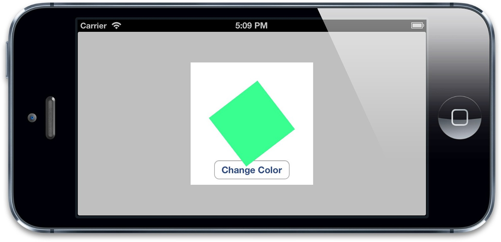

基于UIView的block的动画允许你在动画结束的时候提供一个完成的动作。CATranscation接口提供的+setCompletionBlock:方法也有同样的功能。我们来调整上个例子，在颜色变化结束之后执行一些操作。我们来添加一个完成之后的block，用来在每次颜色变化结束之后切换到另一个旋转90的动画。代码见清单7.3，运行结果见图7.2。
清单7.3 在颜色动画完成之后添加一个回调
- (IBAction)changeColor
{
//begin a new transaction
[CATransaction begin];
//set the animation duration to 1 second
[CATransaction setAnimationDuration:1.0];
//add the spin animation on completion
[CATransaction setCompletionBlock:^{
//rotate the layer 90 degrees
CGAffineTransform transform = self.colorLayer.affineTransform;
transform = CGAffineTransformRotate(transform, M_PI_2);
self.colorLayer.affineTransform = transform;
}];
//randomize the layer background color
CGFloat red = arc4random() / (CGFloat)INT_MAX;
CGFloat green = arc4random() / (CGFloat)INT_MAX;
CGFloat blue = arc4random() / (CGFloat)INT_MAX;
self.colorLayer.backgroundColor = [UIColor colorWithRed:red green:green blue:blue alpha:1.0].CGColor;
//commit the transaction
[CATransaction commit];
}

图7.2 颜色渐变之完成之后再做一次旋转
注意旋转动画要比颜色渐变快得多，这是因为完成块是在颜色渐变的事务提交并出栈之后才被执行，于是，用默认的事务做变换，默认的时间也就变成了0.25秒。